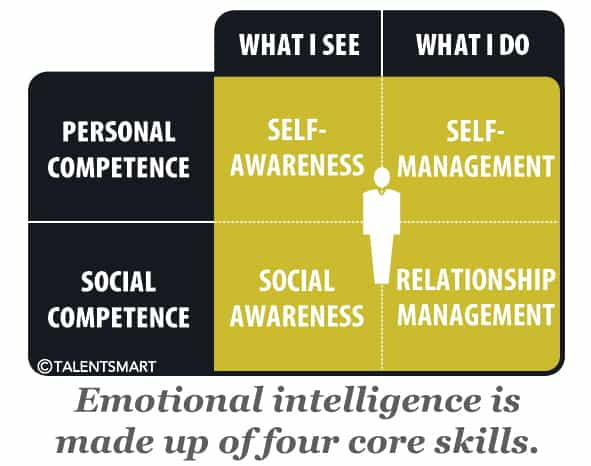

James is a young military professional who enlisted just a little late for this generation's real crusades. Although he isn't the next Rommel or Eisenhower, he's got a couple of tips for aspiring male leaders among a dying society of betas.


In today’s society, there is no longer much of a grey area regarding the gap between good and bad leaders. As a young military officer, this fact has been apparent since my enlistment, particularly in the armed forces, but it wasn’t not until recently when I began undertaking an MBA program within a civilian university that I realized how critical the disparity between the two had become in most organizations and why the lack of discipline in men’s lives today has caused such a shift of power from strong, alpha leaders to weak, beta managers delegating all important tasks to avoid making tough decisions.
In our first course regarding Leadership Theory, I was matched up with men and women from various industries, be they defense, agriculture, production, or entertainment. What I found as a common theme in their opinions regarding leadership was that the important piece was always to save face and take the path of least resistance in order to resolve conflicts as smoothly as possible, thus avoiding any potential collateral damage of any kind.
During these discussions, I wrongfully held my tongue, thinking of how the whole premise of leadership is to cut against the grain and push subordinates and followers to their limits in favour of achieving whatever goals you, they, and the organization have set.

Through readings of American organizational theorist Richard Daft’s The Leadership Experience, the course textbook for this class, the concept of emotional intelligence was introduced, which is essentially a concept describing one’s ability to recognize our own emotions and those of others, as well as how to use it in favour of progression in organizations. It was at this point that I began piecing together what was occurring in these men’s live to cause them to be so cowardly faced with decisions deciding the fate of their and their organizations’ futures.
Emotional intelligence is divided into four basic components: self-awareness, social awareness, self-management, and relationship management. This concept has been mentioned in many articles prior to this one and training the four components leads more wholesome leadership, but also to better game, more happiness and overall better control of one’s life.
Emotional intelligence is developed easily at an individual level—it just takes actual awareness and will to do so. For social awareness, read the news more. Take in your surroundings for your particular community. This will then enable you to reach out and work on relationship management by getting out to community events, not to mention the higher quality women you’ll meet who also want to share in quantitative social events other than drinking at clubs.
It is without a doubt the element of self-management that is essential to effective leadership and what is currently beginning to lack in this generation of male leaders. Bending to the will of others simply to “stay the course” and “not rock the boat” is what is beginning to crumble the foundations of what was once a great society. It is therefore crucial we learn to respond rather than react when faced with any and all situations.
Where reacting is using one’s intuition and emotions to answer a situation, responding is using rationality and logic. Although many situations can be overcome by reaction, for example an ambush on a position, due to prior knowledge, practice and drive, complex situations generally require forethought and analysis which is only available by activating the part of the brain that uses logic and rationality. Self-management of one’s emotions through discipline may be the difference in making the decision that goes against one’s instinct but is safer and more prosperous in the long run.
To further my example of an ambush, it is instinct and tactical to fight through the ambush, particularly with a larger force, however in certain positions pursuing enemy forces may be part of a feint leading into an enemy kill-zone. Only through the use of rational analysis can one potentially determine that it is safer to cut losses and withdraw than push through the terrain. This can also be mirrored to the business realm where great investors are known for that “killer instinct” or knowing when to back off a stock. One must be able to decide based on rationality, not emotion, yet always remaining aware of the emotions in play.
Working on self-management is a little harder than other components, but can be done by simply taking a pause before making decisions and actually evaluating the options for the course of action you are about to take. At first, this will take a moment or two, but as you work on this, it will become second nature. Try using this approach for all decisions, be they what you’re going to have for a meal to where you’re planning your next foreign expedition.
It is self-management through discipline by which the other components of emotional intelligence are driven. It is key to not only establish a routine in your life, but to stick to it. Great leaders are creatures of consistency and habit. If you want to know where to find the greatest military leaders I have met so far, then you need look no farther than the gym at 0600 hrs each morning.
They devote their lives to habit and what is right, and part of that, particularly in the military, is being physically fit which has been shown countless times to boost all other areas of life. There are countless articles out there (particularly on ROK) that can be the foundation for your new journey towards fitness. So start that today.
But discipline is more than just working out every day. It is a lifestyle you must adopt in all facets of your life. This means cutting toxic people out of your life for good, and not seeking their help when you’re feeling lonely or the going gets tough. It means establishing a healthy, hearty routine into your life and following it, regardless of what others think. It means not answering the trolls on social media or getting that cheeseburger for dinner instead of cooking your own meals. Discipline is a simple concept to enact, but it is by far the hardest of all to develop and master.
In conclusion, it is clear that to succeed moving forward as male leaders, emotional intelligence, responsiveness and discipline is key. We must return to the days of self-management and self-control that allowed our forefathers to create strong family units as well as lead our nations to great endeavors. It is this concept that we must continually work on, day in and day out, to become not only better leaders, but also better men.
On your individual level, you must start small. Do it right now by picking up a newspaper or going to your local gym. But you must not let any more opportunities pass you by. The key to becoming a leader is to actually lead, and that starts with taking the initiative to do so.
Read More: Why Being A Loner Makes You A Great Leader